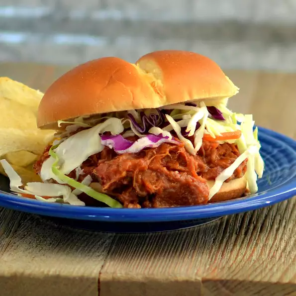

Dr. Pepper Pulled Pork

Description:
Are you ready for a unique spin on the classic pulled pork sandwich? This Dr. Pepper inspired dish sounds like it may take the summer by storm!
Ingredients:
- 4 cups caffeinated pepper-type soda (such as Dr Pepper®)
- 2 cups barbeque sauce (such as Sweet Baby Ray's®), divided
- 1 pound pork tenderloin
- 4 hamburger buns
- 2 cups prepared coleslaw (Optional)
Steps:
- Combine soda and 1/2 cup barbeque sauce in a multi-functional pressure cooker (such as Instant Pot®). Add pork tenderloin. Close and lock the lid. Select high pressure according to manufacturer's instructions; set timer for 50 minutes. Allow 10 to 15 minutes for pressure to build.
- Release pressure using the natural-release method according to manufacturer's instructions, 10 to 40 minutes.
- Remove pork loin and drain liquid from the pot. Shred pork using 2 forks. Return to the pot and mix in remaining 1 1/2 cups barbeque sauce.
- Serve on hamburger buns and top with coleslaw.